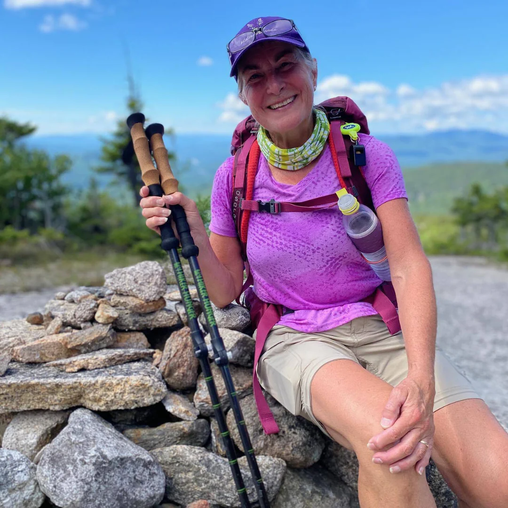

The Modesto Chamber website serves people who want to connect with local business owners and entrepreneurs. It will also serve those looking to attend information meetings, clean up the community, or know what's going on in Modesto.
Mark Han
Mark has been running a business for 10 years. He was successful in his old city, but since moving to Modesto, he hasn't found a good client base. He knows that his product is viable and in high demand in the area. He wants to meet with other entrepreneurs to learn how they have found success.

Marcine Waters
Marcine loves hiking and any outdoor activity. She feels the need to keep up with her health. She knows there are lots of things to do in the area, but she would like ideas. She also wants to do group activities.